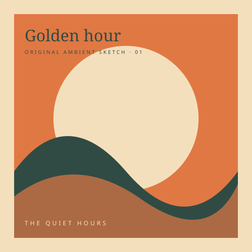

THE LISTENING DESK / VOL. 01
Make time
for a good record.
Pick something you love.
Put the needle down.
Let the world wait a little.
From your record crate
Your files, or a little something from us.
READY WHEN YOU ARE33⅓ RPM · STEREO
SIDE A

THE QUIET HOURSSA—01ANALOG STATE OF MIND
Drag a sleeve onto the turntable, or tap a record to play.
GOOD THINGS, ON REPEAT
Your record crate03
Original ambient sketches.
Room for your favorites.